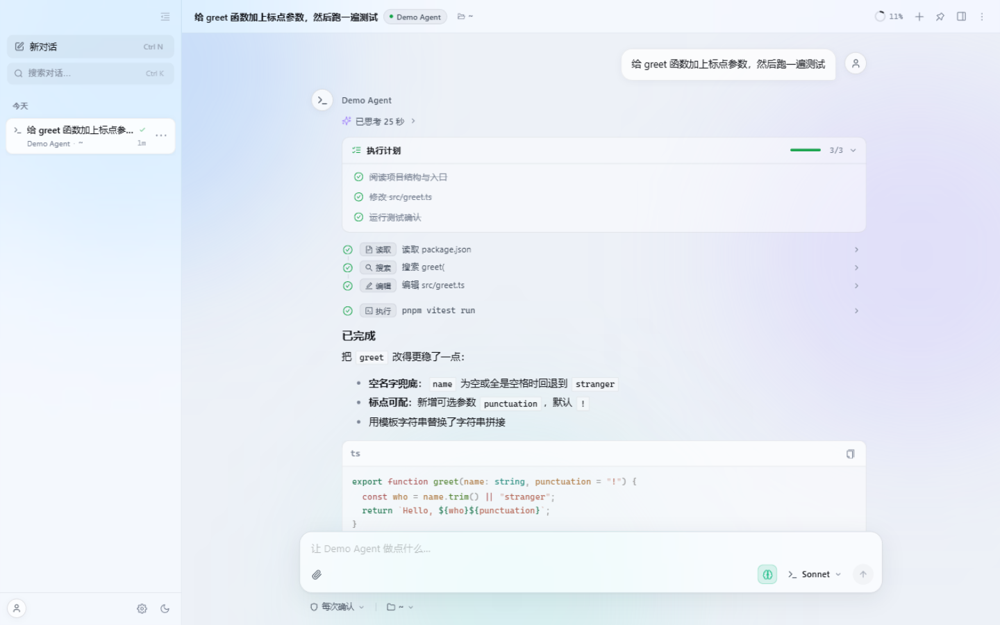
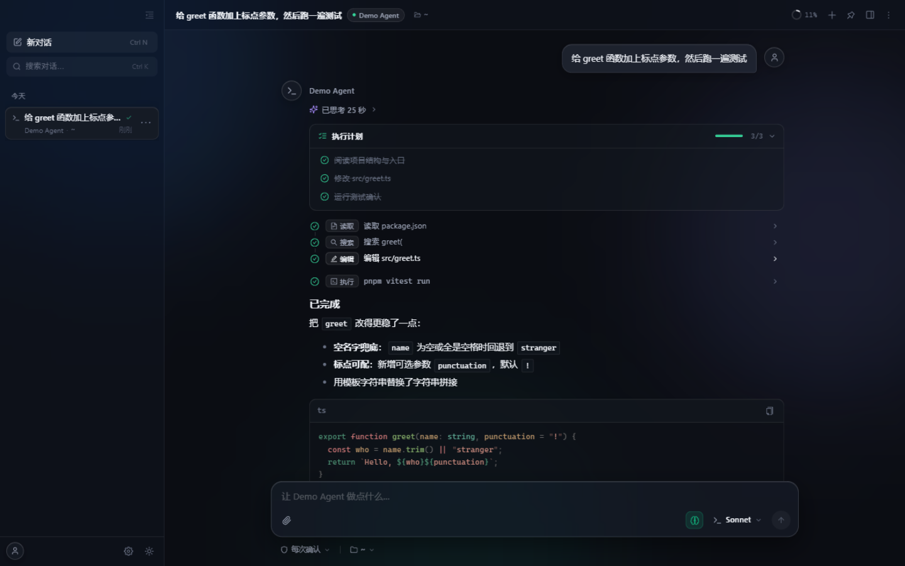
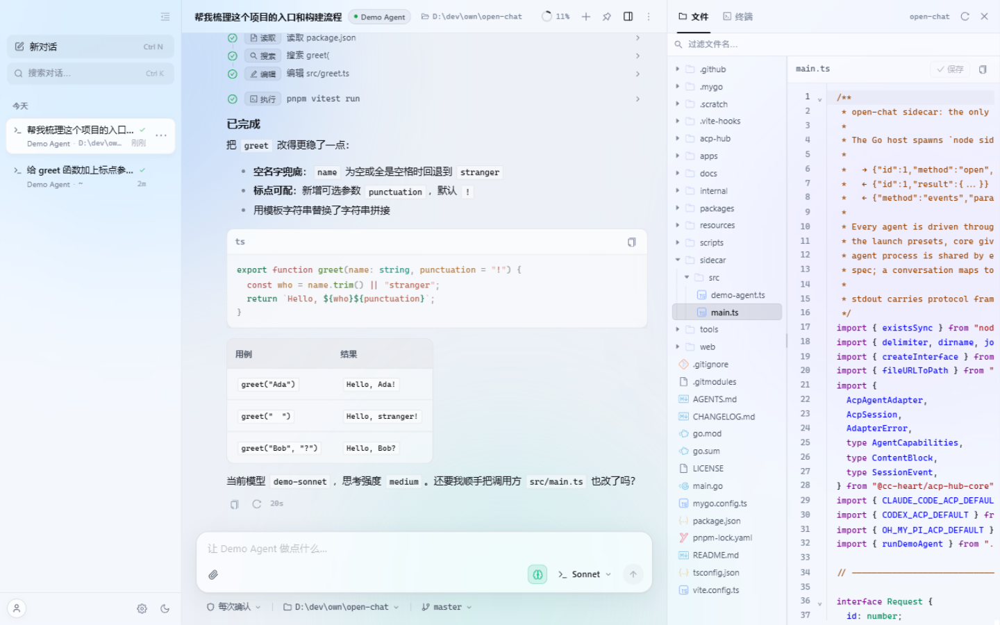

本机的 Coding Agent，收进同一个窗口
open-chat 通过 ACP 直连 Claude Code、Codex、Pi、Oh My Pi 与任意自定义 agent。本地优先，单个安装包开箱即用；也可以用一行 serve 命令变成内网 Web 服务。
内置 Demo Agent —— 没装任何 agent 也能先试试完整流程。

从一句话到跑完测试，全过程看得见
思考、计划、工具调用、代码 diff、终端输出和最终总结，按顺序流在同一份消息记录里；重开对话接着上次继续。

为「认真用 agent 干活」设计的细节
不是又一个聊天壳子——权限、持久化、环境、分发，这些用起来真正疼的地方都替你想到了。
权限审批是一等公民
工具调用的授权请求浮在输入框上方：允许在右、拒绝在左，降低误触；支持每次确认、自动批准与完全访问三档实时切换。
会话持久化，本地落盘
记录落在 ~/.config/open-chat，原子写入 + 流式合并；侧栏分段、搜索、置顶、归档，数据始终在你手里。
零环境折腾
Node sidecar 打包进安装包，前端产物内嵌进二进制；启动时自动读取登录 Shell 的 PATH，从 Dock 启动也能找到 node / claude / codex。
桌面 / 网页双模式
同一份二进制，既是原生桌面应用，也能 open-chat serve 变成带令牌的 HTTP + SSE 服务，在内网另一台设备上接着用。
工作区面板
文件树、内置终端和 CodeMirror 编辑器就在对话旁边；语法高亮开箱即用，改完 ⌘S 直接保存。
Agent 更新管理
设置里跨 mise / npm / bun / Homebrew 检查各 agent CLI 版本，单个或一键批量升级；应用自身也带签名校验的自动更新。
对话旁边，就是项目本身
右侧工作区面板跟着会话的工作目录走：文件树、实时语法高亮编辑器、内置终端，三件套不用离开窗口。
- 离线图标主题 — Catppuccin 文件图标，按扩展名着色
- 直接改文件 — 未保存提醒、撤回，agent 与你共享同一份磁盘
- 看得到 agent 在哪干活 — 每个工具调用都带文件路径与分支

一行命令，变成内网服务
不开窗口也行：serve 把整套 UI 挂到 HTTP + SSE 上，页面代码与桌面模式零分叉，平板和办公室另一台机器都能用。
- 一次性 token 保护，或 -no-auth 仅限本机
- 同一份会话记录，桌面与网页无缝接力
Go 管桌面，Node 管协议，中间只有 NDJSON
Go 宿主负责窗口、目录与持久化；ACP 生态本来就活在 Node 里，所以 sidecar 打包成单文件嵌进二进制。两层之间只有一种协议。
Go 宿主（mygo）
桌面窗口、会话落盘、登录 Shell 环境探测、Host API；serve 模式下同一套 API 换成 HTTP + SSE。
sidecar — acp-hub core（go:embed 单文件）
ACP 握手、事件翻译、权限桥接；每个 agent 一个子进程，多个对话共享同一条连接。
你机器上已有的 agent
下载即用，更新自动送达
安装包内置签名校验的自动更新：后台检查、弹出更新说明、原地替换，重启即新版本。
还没装任何 agent？开发构建内置 Demo Agent，装完 open-chat 就能跑通完整流程。